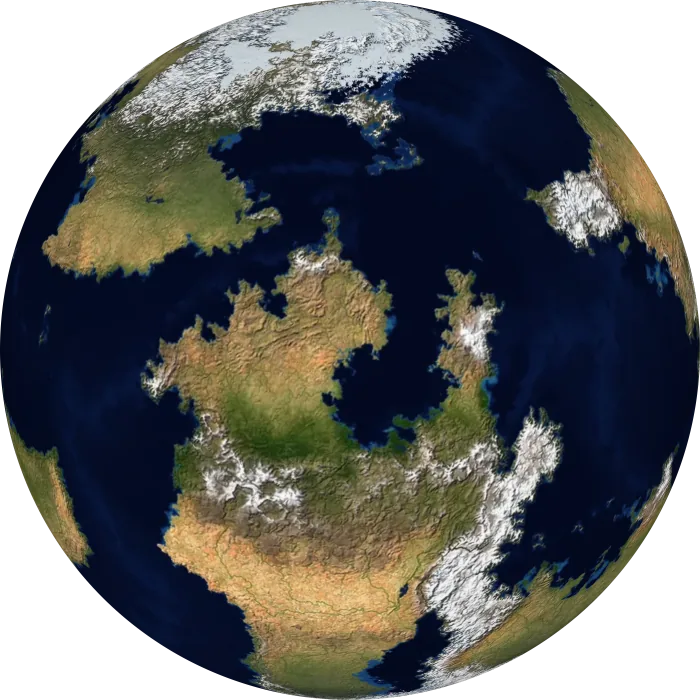

A planet in seconds from a few sliders. Reshape any plate you don’t like and build again.
The most phone-friendly of the three.
A studio of worldbuilding tools
Free worldbuilding tools that take you from a blank page to a world that makes sense. Plates drift, mountains rise where they meet, and rain falls where the winds take it.
Free and open sourceNo account, no install, you own every map you make.

Different ways to your believable world, and worlds made with each.
A planet in seconds from a few sliders. Reshape any plate you don’t like and build again.
The most phone-friendly of the three.
Bring a map you drew. See what its winds, rain and climate zones would really be.
PNG, JPEG or WebP. It starts with Earth.
A planet with a past. Watch it rift and collide, then add detail to the moment you choose.
Best on a desktop for now; its Food view is in beta.
The blogs, channels and tools that shaped how I think about worlds. If you like World Orogen, you'll probably like these too.
The channel that got me to fall in love with worldbuilding, and made cartography seem approachable to a non-artist like myself. They have a deep catalog worth exploring, going over all sorts of scientific worldbuilding topics.
The biggest single inspiration for this project. It goes more in depth than anywhere else on the internet into how you can make a realistic planet. Following their guides will get you something better than any tool out there can provide.
An excellent addition to Artifexian and Worldbuilding Pasta. She provides a more analogue guide to the same topics, but with the same scientific angle. She also goes very deep into the cultural and societal implications of the worlds she builds, and backs it up with in-depth research. Her writing channel, Madeline James Writes, is worth a look too.
A lovely worldbuilding channel that helps me let go of “realistic” worlds, while at the same time creating some of the most beautiful, strange, and believable worlds.
A brilliant channel going over a tool called Gaea, which uses noise and simulated erosion to create realistic landscapes. They pioneered using it for world-scale projects, and were a conceptual inspiration for this project. (I regularly export regions of the maps I generate here to Gaea for a nice finish.)
The original project was heavily and directly inspired by their video Maps: Fractals, Tectonics and the Fourth Dimension, but their channel goes deep into philosophy, design, games and culture. Really worth checking out for any worldbuilder.
A great channel for worldbuilding and writing advice (and for Avatar: The Last Airbender references). An excellent, accessible place for newcomers to worldbuilding, with some nuggets of wisdom for the veteran worldbuilder too.
A huge catalog of videos going over history, mythology, story tropes, and so much more. An excellent place to get inspired and have fun.
Interesting dives into history with a fun, blocky art style. A must if you’re interested in Roman history (though there are plenty of other topics as well).